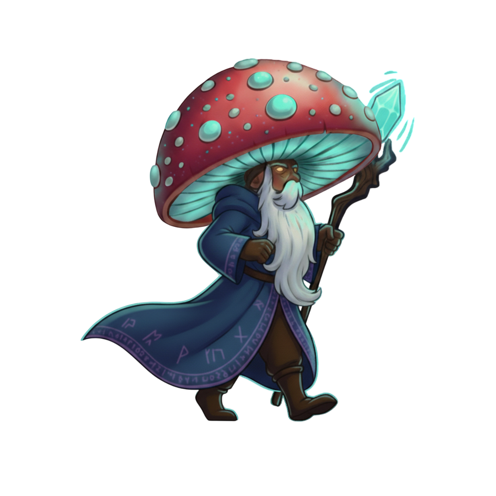
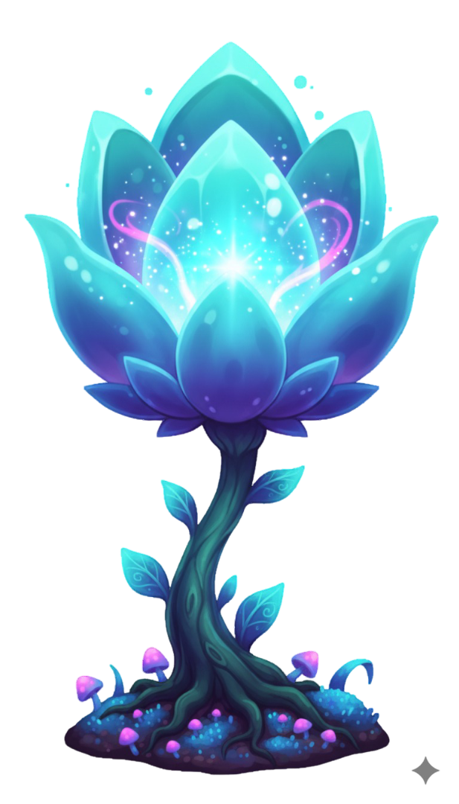

LORE: NARRATIVA BASE
¡Defiende el Corazón del Bosque y la Flor de Maná!
Grumble es un anciano nomo Musgoso, protector de la última arboleda mágica. El juego utiliza el modelo mental de Defensa y la necesidad intuitiva de proteger la base, que es la planta sagrada: La Flor de Maná.

PROTAGONISTA: GRUMBLE
El anciano gnomo que lucha lanzando hechizos para neutralizar y eliminar a los enemigos.

OBJETIVO: LA FLOR DE MANÁ
El corazón del bosque que crece justo detrás de Grumble. Su vida es la tuya.
/assets/escarabajo cavador.png)
/assets/golem.png)
/assets/masticador_side_passing_1.png)
/assets/ghost.png)
PLAGAS CENTRALES
Masticadores, Golems, Escarabajos y Ghost componen las 4 oleadas iniciales.
/assets/Morgo org.png)
JEFE FINAL: MORGO
La fuente de la corrupción fúngica, protegido por sus honguitos tóxicos.
SISTEMAS DE INTERACCIÓN Y ACCESIBILIDAD
El diseño optimizado para baja carga cognitiva incluye un HUD informativo (Vida, Hojas, Oleada), respuesta inmediata al toque y elementos de accesibilidad como modo de alto contraste.